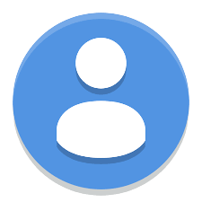

<div class="main-container">
  <div class="posts-container">
    <div class="page-title">My Friends Post's</div>
    <!-- <div class="post">
      <div class="post-info">
        <div class="post-writer-image">
          
        </div>
      </div>
      <div class="post-body">
        <div class="post-image">
          
        </div>
        <div class="post-desc">sd</div>
      </div>
    </div> -->
    <div
      class="blog_post"
      (click)="postChosen(post)"
      *ngFor="let post of posts; let i = index"
    >
      <div class="img_pod">
        
      </div>
      <div class="img-post" *ngIf="post.imageSorce">
        
      </div>
      <h3>{{ post.date | date: "mediumDate" }}</h3>
      <p>
        {{ post.description }}
      </p>
      <div class="infos-container">
        <div class="info-container">
          <button
            mat-icon-button
            color="warn"
            aria-label="Example icon button with a heart icon"
            (click)="addLike(post.id)"
          >
            <i *ngIf="this.isPostLiked[i]" class="bx bxs-heart"></i>
            <i *ngIf="!this.isPostLiked[i]" class="bx bx-heart"></i>

            {{ postLikeCounter[i] }}
          </button>
        </div>
        <div class="info-container">
          <button
            mat-icon-button
            color="primary"
            aria-label="Example icon button with a home icon"
          >
            <i class="bx bx-chat"></i> {{ post.likes.length }}
          </button>
        </div>
      </div>
    </div>
  </div>
  <div class="friends-list-container">FriendsList</div>
</div>
